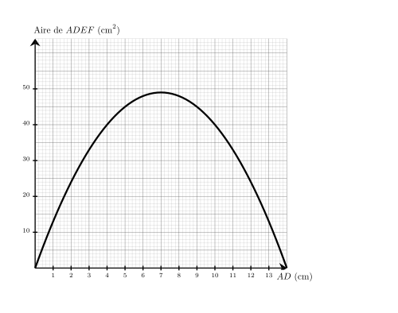
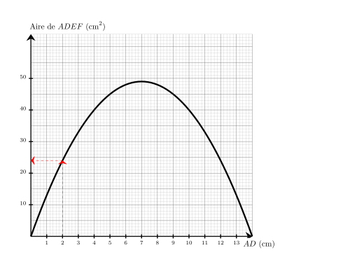
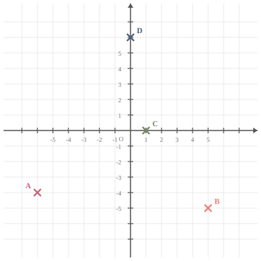

Sur le graphique ci-dessus, on a représenté la relation entre la longueur $AD$ et l'aire du rectangle $ADEF$. Quelle est l'aire du rectangle $ADEF$ lorsque la longueur $AD$ vaut $2\text{ cm}$ ?

On cherche $Aire_{ADEF}$ lorsque $AD = 2\text{ cm}$. On trouve $Aire_{ADEF}={\color{#8B3C52}\boldsymbol{24}}\text{ cm}^2$.

03
Question
Convertir $136$ secondes en minutes ($\text{min}$) et secondes ($\text{s}$).
Mentalement :
On cherche le multiple de $60$ inférieur à $136$ le plus grand possible. C'est $2\times 60 = 120$.
Ainsi $136 = 120 + 16$ donc $136\text{\,s\,}= 2\text{\,min\,}16\text{\,s}$. $136 = (2 \times 60) + 16$ donc $136$ s = ${\color{#8B3C52}\boldsymbol{2\mathbf{\,min\,}16\mathbf{\,s}}}$.
04
Question
$KLM$ est un triangle rectangle en $K$ dans lequel
$KL=3$ et $KM=\sqrt{3}$.
Calculer la valeur exacte de $LM$ .
On utilise le théorème de Pythagore dans le triangle $KLM$, rectangle en $K$.
On obtient :
$\begin{aligned}
LM^2&=KL^2+KM^2\\
LM^2&=\sqrt{3}^2+3^2\\
LM^2&=3+9\\
LM^2&=12\\
LM&={\color{#8B3C52}\boldsymbol{\sqrt{12}}}
\end{aligned}$
01
Question
Simplifier le plus possible la fraction suivante $\dfrac{4}{70}$
$B=-7c(2c-4)$ $B={\color{blue}\boldsymbol{-7c\times 2c + (-7c)\times (-4)}}$ En réduisant l'expression, on obtient : $B=$ ${\color{#8B3C52}\boldsymbol{-14c^2+28c}}$.
03
Question
Placer les points suivants : $A(-6\;;\;-4)$ ; $B(5\;;\;-5)$ ; $C(1\;;\;0)$ et $D(0\;;\;6)$.
Les points sont placés aux coordonnées indiquées :

04
Question
Sur la figure ci-dessus, dans le triangle $BVW$, les droites $(VW)$ et $(YF)$ sont parallèles. Déterminer la longueur $BV$.
Dans le triangle $BVW$, les droites $(VW)$ et $(YF)$ sont parallèles.
D'après le théorème de Thalès, on a :
$\dfrac{BV}{BF} =
\dfrac{VW}{YF}$.
En remplaçant par les longueurs, on obtient :
$\dfrac{BV}{BF} = \dfrac{6}{4}=1{,}5$.
On en déduit que :
$BV = 1{,}5 \times 8 = {\color{#8B3C52}\boldsymbol{12}}$ cm.
01
Question
Compléter avec le signe < ou >. $$-1{,}4 \quad \ldots \quad-1{,}8$$
Choisis le calcul qui permet de résoudre l'équation suivante :
Pour résoudre $8x+1=23$ :
A. $23\times 8-1$
B. $(23-8)-1$
C. $\dfrac{23}{8}-1$
D. $\dfrac{23-1}{8}$
$8x+1=23$
On enlève $1$ : $8x=23-1$.
Puis on divise par $8$ : $x=\dfrac{23-1}{8}$.
Bonne réponse : D.
03
Question
$SRTW$ est un carré et $WTV$ est un triangle équilatéral ($V$ est à l'intérieur du carré $SRTW$). $RTU$ est un triangle isocèle en $U$ ($U$ est à l'extérieur du carré $SRTW$). Représenter cette configuration par un schéma à main levée et ajouter les codages nécessaires.
Voilà ci-dessous un schéma qui pourrait convenir à la situation.
04
Question
Dans le triangle $MLJ$, rectangle en $L$, quel calcul doit-on effectuer pour déterminer le cosinus de l’angle $\widehat{LMJ}$ ?
La bonne formule est :
$\text{cosinus}(\widehat{LMJ}) =
\dfrac{\text{longueur du côté adjacent à l’angle } \widehat{LMJ}}{\text{longueur de l’hypoténuse }}=\dfrac{ML}{MJ}$.